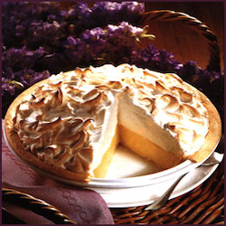

Meringue Cafe

One 9-inch pie
30 Min - Prep time
10 Min - Cook time
40 Min - Total
8 Servings
INGREDIENTS
- 1 cup white sugar
- 2 tbsp all-purpose flour
- 3 tbsp cornstarch
- 1/4 tsp salt
- 1 1/2 cups water
- 2 lemons, juiced and zested
- 2 tbsp butter
- 4 egg yolks, beaten
- 1(9 inch) pie crust, baked
- 4 egg whites
- 6 tbsp white sugar
DIRECTIONS
- Preheat Oven: In a medium saucepan...
- Whisk together 1 cup sugar, flour, cornstarch, and salt
- Stir in water, lemon juice and lemon zest
- Cook over medium-high heat, stirring ferquently until mixture comes to boil
- Stir in butter
- Place egg youlks in small bawl and gradually whisk in 1/2 cup of hot sugar mixture
- Whisk egg youlk mixture back into remaining sugar mixture
- Bring to a boil and continue to cook while string constantly until thick
- Remove from heat.
- Pour filling into backed pastery shell
- Make Meringuer: In a large glass or metal bowl...
- Whip egg whites until foamy
- Add sugar gradually, and continue to whip untill stiff peaks foam
- Spread meringue over pie, sealing the edges at the crust
- Bake: Bake in preheated oven for 10 minutes, or untill is golden brown
This is our favorite recipe here at Granny's Pies. It has been enjoyed by pie fans for many years. It's Granny's favorite! We hope you will find that this is delicious and also easy to follow; it's a piece of cake pie!
USER COMMENTS
This is a very fun recipe to follow, because Grandma makes it sweet and simple. This pie is thickened with cornstarch and flour in addition to egg yolks, and contains no milk.
- Rahmat Zada.
Q: What do you call an ape who loves pie?
A: A meringue-utan.
- Elias Ahmad.
This site can really engage my interest. Follow the recipe above and make it so! This pie is number one.
- Jai Kishan
LINKS
Search for other lemon meringue pie recipes Home
Copyright © 2021 Meringue Cafe
A Meringue Production
All rights reserved